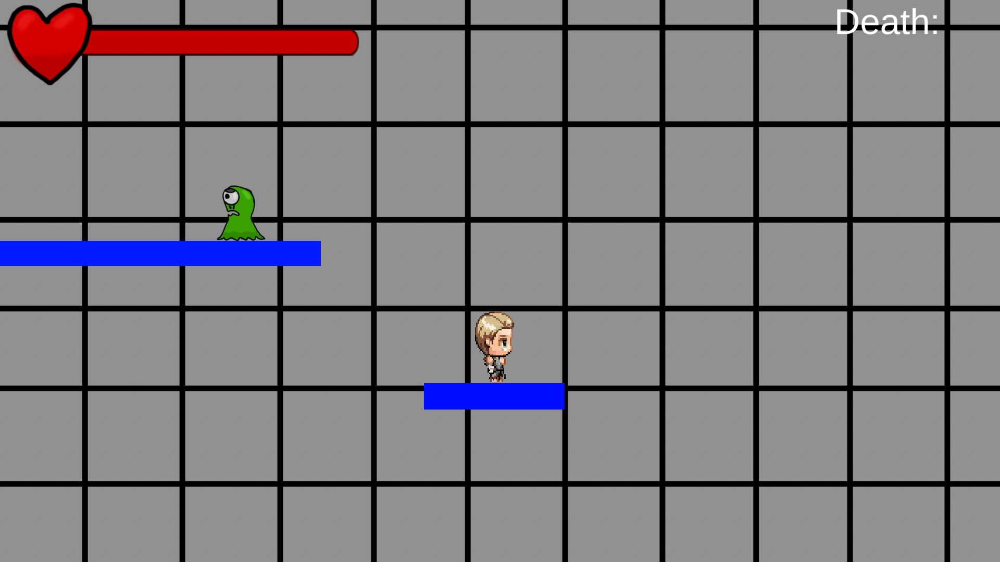
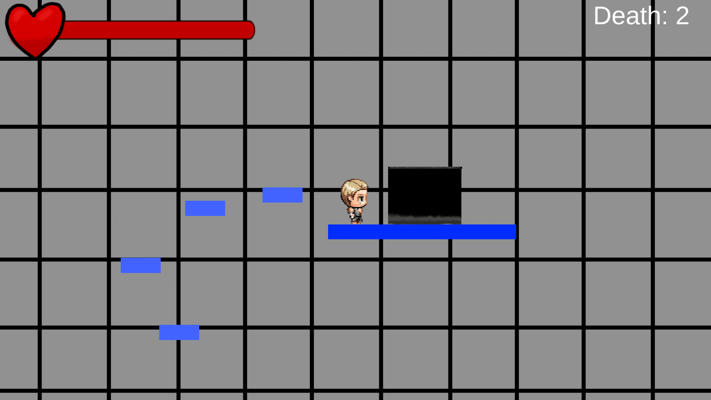
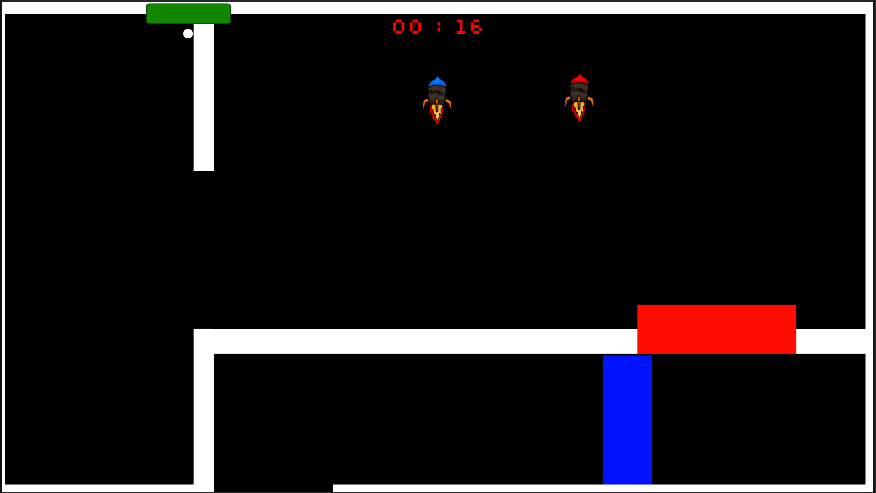

Description:
You play as a test subject where someone is testing you in parkour, but even if you fall into lava, or get hit by the enemies, you will respawn back right where you started.



Post Note: This game was made for a school gamejam named: The Hyper Unicorn Jam (2022). Btw, this game was made in 3 days. I have no intentions of working further with this game.